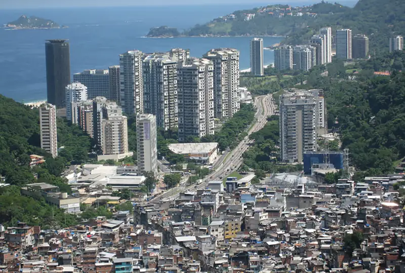
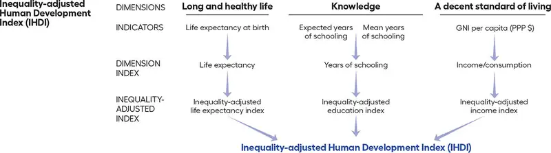
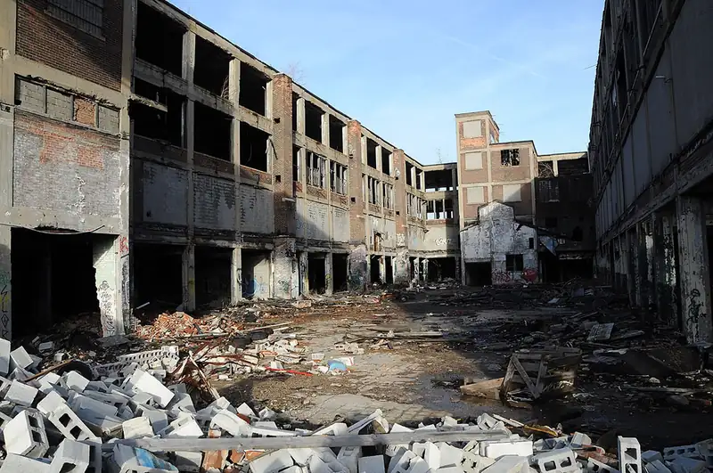
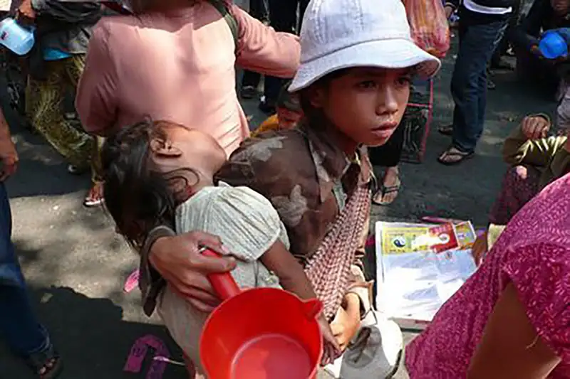
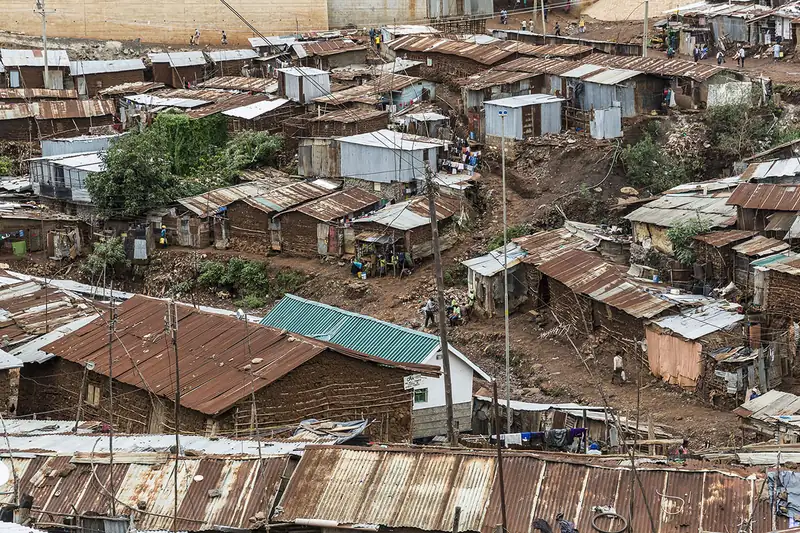
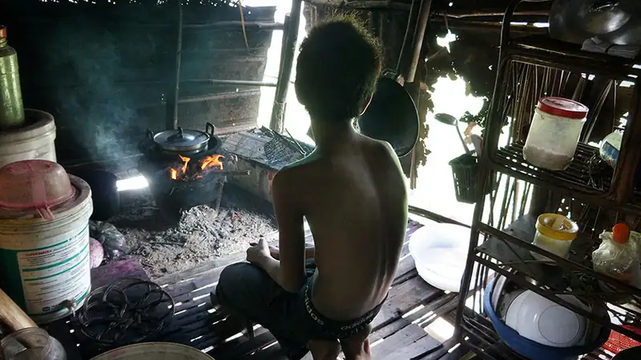
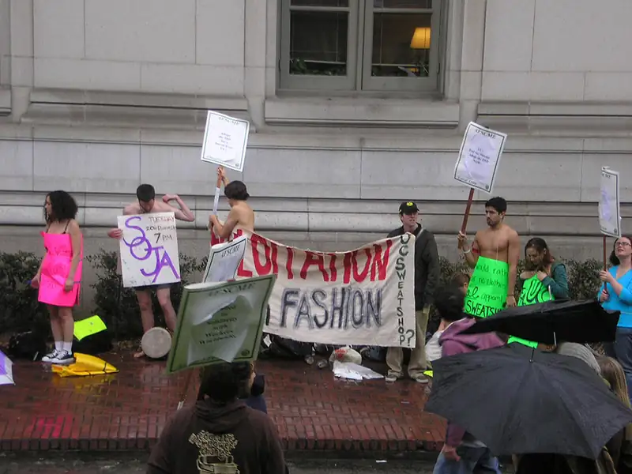
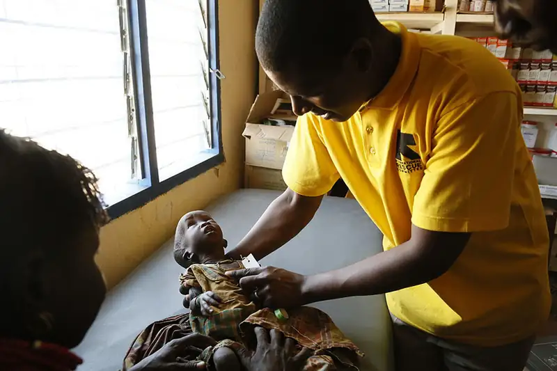

Chapter 10: Global Inequality¶
Introduction¶

The April 24, 2013 collapse of the Rana Plaza in Dhaka, Bangladesh that killed over 1,100 people, was the deadliest garment factory accident in history, and it was preventable (International Labour Organization, Department of Communication 2014).
In addition to garment factories employing about 5,000 people, the building contained a bank, apartments, childcare facilities, and a variety of shops. Many of these closed the day before the collapse when cracks were discovered in the building walls. When some of the garment workers refused to enter the building, they were threatened with the loss of a month’s pay. Most were young women, aged twenty or younger. They typically worked over thirteen hours a day, with two days off each month. For this work, they took home between twelve and twenty-two cents an hour, or $10.56 to $12.48 a week. Without that pay, most would have been unable to feed their children. In contrast, the U.S. federal minimum wage is $7.25 an hour, and workers receive wages at time-and-a-half rates for work in excess of forty hours a week.
32 percent of the clothing made in the collapsed Rana Plaza building was intended for U.S., Canadian, and European stores. Walmart jeans were made on the fifth floor. Clothing for The Children’s Place was produced in the building, as well. Afterward, Walmart and The Children’s Place pledged $1 million and $450,000 (respectively) to the Rana Plaza Trust Fund, but fifteen other companies with clothing made in the building chose not to (Institute for Global Labour and Human Rights 2014).
While you read this chapter, think about the global system that allows U.S. companies to outsource their manufacturing to peripheral nations, where many women and children work in conditions that some characterize as slave labor. Do people in the United States have a responsibility to foreign workers? Should U.S. corporations be held accountable for what happens to garment factory workers who make their clothing? What can you do as a consumer to help such workers?
10.1 Global Stratification and Classification¶
Learning Objectives
By the end of this section, you should be able to:
- Describe global stratification
- Differentiate the development history of various classification systems
- Use terminology from Wallerstein’s world systems approach
- Explain the World Bank’s classification of economies
Just as the United States' wealth is increasingly concentrated among its richest citizens, global inequality concentrates resources within certain nations and among certain people.
Measuring the financial resource of the world's richest people is generally easier than measuring the resources of people living in poverty (Matthews 2019), but researchers and advocates have created some tools to evaluate and understand economic conditions and outcomes.
One straightforward method is to compare the ratio of income of the richest 10 percent to the income of the poorest 10 percent. (The same method is sometime used with the richest 20 percent and the poorest 20 percent.) This method does not always provide a full picture of income inequality (it literally leaves out the middle), but it can certain provide insight.
The Human Development Index expresses the capabilities of people's potential achievement. The index is calculated using data regarding people's lifespan, education, and income. By using both financial and non-financial factors, it paints a deeper picture of the lives and issues in a region. For example, a nation with high income but low education will still have difficulty in overall opportunity. This approach was developed by Pakistani economist Mahbub ul Haq, who produced the first annual Human Development report, which captures and illustrates development issues and changes each year.

Another measure of inequality is Gini Coefficient, named after the Italian sociologist and statistician Corrado Gini. (Be sure not to confuse this with GNI, which is the gross national income.) It is calculated using a number of financial indicators, and is expressed as either a decimal or a percentage. A country in which every resident has the same income would have a Gini coefficient of 0 (or 0 percent). A country in which one resident earned all the income, while everyone else earned nothing, would have an income Gini coefficient of 1 (or 100 percent). Thus, the higher the number (the closer to that one person having all the income or wealth), the more inequality there is.
Other gauges are a bit more direct: To indicate the level of poverty within a nation or region, researchers calculate the percentage of the population living beneath various poverty thresholds. A common measure is to consider the percentage of a nation's population living on less than $1.90 per day, which is commonly known as the International Poverty Line. (Note that United States dollars are often used as a global standard in these types of measurement.) The table in the next sub-section uses this method.
These are just a few of the ways that sociologists, economists, governments, and others try to understand levels of income inequality and poverty. Changes in these indicators would alert policymakers that something is affecting the population. No changes might tell people that, for example, a new financial assistance program for the poor is not working.
With these analytical elements in mind, let’s consider how the three major sociological perspectives might contribute to our understanding of global inequality.
The functionalist perspective is a macroanalytical view that focuses on the way that all aspects of society are integral to the continued health and viability of the whole. A functionalist might focus on why we have global inequality and what social purposes it serves. This view might assert, for example, that we have global inequality because some nations are better than others at adapting to new technologies and profiting from a globalized economy, and that when core nation companies locate in peripheral nations, they expand the local economy and benefit the workers.
Conflict theory focuses on the creation and reproduction of inequality. A conflict theorist would likely address the systematic inequality created when core nations exploit the resources of peripheral nations. For example, how many U.S. companies take advantage of overseas workers who lack the constitutional protection and guaranteed minimum wages that exist in the United States? Doing so allows them to maximize profits, but at what cost?
The symbolic interaction perspective studies the day-to-day impact of global inequality, the meanings individuals attach to global stratification, and the subjective nature of poverty. Someone applying this view to global inequality would probably focus on understanding the difference between what someone living in a core nation defines as poverty (relative poverty, defined as being unable to live the lifestyle of the average person in your country) and what someone living in a peripheral nation defines as poverty (extreme poverty, defined as being barely able, or unable, to afford basic necessities, such as food).
Global Stratification¶
While stratification in the United States refers to the unequal distribution of resources among individuals, global stratification refers to this unequal distribution among nations. There are two dimensions to this stratification: gaps between nations and gaps within nations. When it comes to global inequality, both economic inequality and social inequality may concentrate the burden of poverty among certain segments of the earth’s population (Myrdal 1970).
As mentioned earlier, one way to evaluate stratification is to consider how many people are living in poverty, and particularly extreme poverty, which is often defined as needing to survive on less than $1.90 per day. Fortunately, until the COVID-19 pandemic impacted economies in 2020, the extreme poverty rate had been on a 20-year decline. In 2015, 10.1 percent of the world's population was living in extreme poverty; in 2017, that number had dropped an entire percentage point to 9.2 percent. While a positive, that 9.2 percent is equivalent to 689 million people living on less than $1.90 a day. The same year, 24.1 percent of the world lived on less than $3.20 per day and 43.6 percent on less than $5.50 per day in 2017 (World Bank 2020). The table below makes the differences in poverty very clear.
Table 10.1 The differences among countries is clear when considering their extreme poverty rates. For the most part, the selected countries show disparities even within countries from the same regions. All data is from 2018. (World Bank 2020)
| Country | Percentage of people living on less than $1.90 | Percentage of people living on less than $3.90 | Percentage of people living on less than $5.50 |
|---|---|---|---|
| Colombia | 4.1 | 10.9 | 27.8 |
| Costa Rica | 1.4 | 3.6 | 10.9 |
| Georgia | 4.5 | 15.7 | 42.9 |
| Kyrgyzstan | 0.9 | 15.5 | 61.3 |
| Sierra Leone | 40.1 | 74.4 | 92.1 |
| Angola | 51.8 | 73.2 | 89.3 |
| Lithuania | 0.7 | 1.0 | 3.8 |
| Ukraine | 0.0 | 0.4 | 4.0 |
| Vietnam | 1.9 | 7.0 | 23.6 |
| Indonesia | 3.6 | 9.6 | 53.2 |
Most of us are accustomed to thinking of global stratification as economic inequality. For example, we can compare the United States’ average worker’s wage to America’s average wage. Social inequality, however, is just as harmful as economic discrepancies. Prejudice and discrimination—whether against a certain race, ethnicity, religion, or the like—can create and aggravate conditions of economic equality, both within and between nations. Think about the inequity that existed for decades within the nation of South Africa. Apartheid, one of the most extreme cases of institutionalized and legal racism, created a social inequality that earned it the world’s condemnation.
Gender inequity is another global concern. Consider the controversy surrounding female genital mutilation. Nations that practice this female circumcision procedure defend it as a longstanding cultural tradition in certain tribes and argue that the West shouldn’t interfere. Western nations, however, decry the practice and are working to stop it.
Inequalities based on sexual orientation and gender identity exist around the globe. According to Amnesty International, a number of crimes are committed against individuals who do not conform to traditional gender roles or sexual orientations (however those are culturally defined). From culturally sanctioned rape to state-sanctioned executions, the abuses are serious. These legalized and culturally accepted forms of prejudice and discrimination exist everywhere—from the United States to Somalia to Tibet—restricting the freedom of individuals and often putting their lives at risk (Amnesty International 2012).
Global Classification¶
A major concern when discussing global inequality is how to avoid an ethnocentric bias implying that less-developed nations want to be like those who’ve attained post-industrial global power. Terms such as developing (nonindustrialized) and developed (industrialized) imply that unindustrialized countries are somehow inferior, and must improve to participate successfully in the global economy, a label indicating that all aspects of the economy cross national borders. We must take care how we delineate different countries. Over time, terminology has shifted to make way for a more inclusive view of the world.
Global classification methods are not only important in understanding economic differences among countries, but also in providing ways to classify countries and identify trends in other areas. The classifications discussed below will be used in other chapters, such as the chapter on health and medicine.
Cold War Terminology¶
Cold War terminology was developed during the Cold War era (1945–1980). Familiar and still used by many, it classifies countries into first world, second world, and third world nations based on their respective economic development and standards of living. When this nomenclature was developed, capitalistic democracies such as the United States and Japan were considered part of the first world. The poorest, most undeveloped countries were referred to as the third world and included most of sub-Saharan Africa, Latin America, and Asia. The second world was the in-between category: nations not as limited in development as the third world, but not as well off as the first world, having moderate economies and standard of living, such as China or Cuba. Later, sociologist Manual Castells (1998) added the term fourth world to refer to stigmatized minority groups that were denied a political voice all over the globe (indigenous minority populations, prisoners, and the homeless, for example).
Also during the Cold War, global inequality was described in terms of economic development. Along with developing and developed nations, the terms less-developed nation and underdeveloped nation were used. This was the era when the idea of noblesse oblige (first-world responsibility) took root, suggesting that the so-termed developed nations should provide foreign aid to the less-developed and underdeveloped nations in order to raise their standard of living.
Immanuel Wallerstein: World Systems Approach¶
Immanuel Wallerstein’s (1979) world systems approach uses an economic basis to understand global inequality. Wallerstein conceived of the global economy as a complex system that supports an economic hierarchy that placed some nations in positions of power with numerous resources and other nations in a state of economic subordination. Those that were in a state of subordination faced significant obstacles to mobilization.
Core nations are dominant capitalist countries, highly industrialized, technological, and urbanized. For example, Wallerstein contends that the United States is an economic powerhouse that can support or deny support to important economic legislation with far-reaching implications, thus exerting control over every aspect of the global economy and exploiting both semi-peripheral and peripheral nations. We can look at free trade agreements such as the North American Free Trade Agreement (NAFTA) as an example of how a core nation is able to leverage its power to gain the most advantageous position in the matter of global trade.
Peripheral nations have very little industrialization; what they do have often represents the outdated castoffs of core nations or the factories and means of production owned by core nations. They typically have unstable governments, inadequate social programs, and are economically dependent on core nations for jobs and aid. There are abundant examples of countries in this category, such as Vietnam and Cuba. We can be sure the workers in a Cuban cigar factory, for example, which are owned or leased by global core nation companies, are not enjoying the same privileges and rights as U.S. workers.
Semi-peripheral nations are in-between nations, not powerful enough to dictate policy but nevertheless acting as a major source for raw material and an expanding middle-class marketplace for core nations, while also exploiting peripheral nations. Mexico is an example, providing abundant cheap agricultural labor to the U.S., and supplying goods to the United States market at a rate dictated by the U.S. without the constitutional protections offered to United States workers.
World Bank Economic Classification by Income¶
While the World Bank is often criticized, both for its policies and its method of calculating data, it is still a common source for global economic data. Along with tracking the economy, the World Bank tracks demographics and environmental health to provide a complete picture of whether a nation is high income, middle income, or low income.
![This world map shows advanced, transitioning, less, and least developed countries. Low income countries are those with an annual income of $1025 or less per capita, and include Afghanistan, Syria, Yemen, Madagascar, and many central African nations. Lower middle income countries have an annual income between $1026 and $4035 per capita, and include India, Pakistan, Vietnam, Burma, Papua New Guinea, Ukraine, Moldova, Bolivia, and many countries on the African coastal areas. Upper middle income countries have an income between $4036 and $12075, and include Russia, China, Kazakstan, Romania, Iran, Iraq, Libya, Mexico, and most South American countries as well as the nations in the very south of Africa. High income countries have an income over $12076 per capita and include Saudi Arabia, Oman, Australia, Japan, South Korea, most of Europe, Chile, Uruguay, The United States, and Canada.](img/soc3e-10-01-02.webp)
High-Income Nations¶
The World Bank defines high-income nations as having a gross national income of at least $12,536 per capita. in 2019 (World Bank 2021). (Note that the classifications will always lag by a couple of years so that analysts can evaluate the true income of the nations.) Examples include Belgium, Canada, Japan, Oman, Puerto Rico, and the United States.
High-income countries face two major issues: capital flight and deindustrialization. Capital flight refers to the movement (flight) of capital from one nation to another, as when General Motors automotive company closed U.S. factories in Michigan and opened factories in Mexico.
Deindustrialization, a related issue, occurs as a consequence of capital flight, as no new companies open to replace jobs lost to foreign nations. As expected, global companies move their industrial processes to the places where they can get the most production with the least cost, including the building of infrastructure, training of workers, shipping of goods, and, of course, paying employee wages. This means that as emerging economies create their own industrial zones, global companies see the opportunity for existing infrastructure and much lower costs. Those opportunities lead to businesses closing the factories that provide jobs to the middle class within core nations and moving their industrial production to peripheral and semi-peripheral nations.
Big Picture: Capital Flight, Outsourcing, and Jobs in the United States

Capital flight describes jobs and infrastructure moving from one nation to another. Look at the U.S. automobile industry. In the early twentieth century, the cars driven in the United States were made here, employing thousands of workers in Detroit and in the companies that produced everything that made building cars possible. However, once the fuel crisis of the 1970s hit and people in the United States increasingly looked to imported cars with better gas mileage, U.S. auto manufacturing began to decline. During the 2007–2009 recession, the U.S. government provided emergency funding (usually called a "bail out") for the three main auto companies, which is evidence of those companies' vulnerability. At the same time, Japanese-owned Toyota and Honda and South Korean Kia maintained stable sales levels.
Capital flight also occurs when services (as opposed to manufacturing) are relocated. Chances are if you have called the tech support line for your cell phone or Internet provider, you’ve spoken to someone halfway across the globe. This professional might tell you her name is Susan or Joan, but her accent makes it clear that her real name might be Parvati or Indira. It might be the middle of the night in that country, yet these service providers pick up the line saying, “Good morning,” as though they are in the next town over. They know everything about your phone or your modem, often using a remote server to log in to your home computer to accomplish what is needed. These are the workers of the twenty-first century. They are not on factory floors or in traditional sweatshops; they are educated, speak at least two languages, and usually have significant technology skills. They are skilled workers, but they are paid a fraction of what similar workers are paid in the United States. For U.S. and multinational companies, the equation makes sense. India and other semi-peripheral countries have emerging infrastructures and education systems to fill their needs, without core nation costs.
As services are relocated, so are jobs. In the United States, unemployment is high. Many college-educated people are unable to find work, and those with only a high school diploma are in even worse shape. We have, as a country, outsourced ourselves out of jobs, and not just menial jobs, but white-collar work as well. But before we complain too bitterly, we must look at the culture of consumerism that we embrace. A flat screen television that might have cost $1,000 a few years ago is now $250. That cost savings has to come from somewhere. When consumers seek the lowest possible price, shop at big box stores for the biggest discount they can get, and generally ignore other factors in exchange for low cost, they are building the market for outsourcing. And as the demand is built, the market will ensure it is met, even at the expense of the people who wanted it in the first place.
Middle-Income Nations¶
The World Bank divides middle-income economies into two categories. Lower middle income areas are those with a GNI per capita of more than $1,036 but less than $4,045. Upper middle income areas are those with A GNI per capita between $4,046 and $12,535. Democratic Republic of Congo, Tunisia, Philippines, El Salvador, and Nepal are are examples of lower-middle-income countries. And Argentina, Mexico, China, Iran, Turkey, and Namibia are examples of upper-middle-income nations (World Bank 2021).
Perhaps the most pressing issue for middle-income nations is the problem of debt accumulation. As the name suggests, debt accumulation is the buildup of external debt, wherein countries borrow money from other nations to fund their expansion or growth goals. As the uncertainties of the global economy make repaying these debts, or even paying the interest on them, more challenging, nations can find themselves in trouble. Once global markets have reduced the value of a country’s goods, it can be very difficult to ever manage the debt burden. Such issues have plagued middle-income countries in Latin America and the Caribbean, as well as East Asian and Pacific nations (Dogruel and Dogruel 2007).
Low-Income Nations¶
The World Bank defines low-income countries as nations whose per capita GNI was $1,035 per capita or less in 2019. For example, Afghanistan, Ethiopia, and Yemen are considered low-income countries. Low-income economies are primarily found in Asia and Africa (World Bank 2021), where most of the world’s population lives. There are two major challenges that these countries face: women are disproportionately affected by poverty (in a trend toward a global feminization of poverty) and much of the population lives in absolute poverty.
Nations' classifications often change as their economies evolve and, sometimes, when their political positions change. Nepal, Indonesia, and Romania all moved up to a higher status based on improved economies. While Sudan, Algeria, and Sri Lanka moved down a level. A few years ago, Myanmar was a low-income nation, but now it has moved into the middle-income area. With Myanmar's 2021 coup, the massive citizen response, and the military's killing of protesters, its economy may go through a downturn again, returning it to the low-income nation status.
10.2 Global Wealth and Poverty¶
Learning Objectives
By the end of this section, you should be able to:
- Differentiate relative, extreme, and subjective poverty
- Describe the economic situation of some of the world’s most impoverished areas
- Explain the cyclical impact of the consequences of poverty

What does it mean to be poor? Does it mean being a single mother with two kids in New York City, waiting for the next paycheck in order to buy groceries? Does it mean living with almost no furniture in your apartment because your income doesn’t allow for extras like beds or chairs? Or does it mean having to live with the distended bellies of the chronically malnourished throughout the peripheral nations of Sub-Saharan Africa and South Asia? Poverty has a thousand faces and a thousand gradations; there is no single definition that pulls together every part of the spectrum. You might feel you are poor if you can’t afford cable television or buy your own car. Every time you see a fellow student with a new laptop and smartphone you might feel that you, with your ten-year-old desktop computer, are barely keeping up. However, someone else might look at the clothes you wear and the calories you consume and consider you rich.
Types of Poverty¶
Social scientists define global poverty in different ways and take into account the complexities and the issues of relativism described above. Relative poverty is a state of living where people can afford necessities but are unable to meet their society’s average standard of living. People often disparage “keeping up with the Joneses”—the idea that you must keep up with the neighbors’ standard of living to not feel deprived. But it is true that you might feel ”poor” if you are living without a car to drive to and from work, without any money for a safety net should a family member fall ill, and without any “extras” beyond just making ends meet.
Contrary to relative poverty, people who live in extreme poverty lack even the basic necessities, which typically include adequate food, clean water, safe housing, and access to healthcare. Extreme poverty occurs when someone lives on less than 1.90 U.S dollars per day.
In prior years, the World Bank—the primary organization analyzing these trends––focused heavily on the number of people under that extreme poverty level of $1.90 per day. (The previous term was "absolute poverty.") In 2018, the World Bank added two more measures to consider: people living on less than $3.20 and people living on less than $5.50. As the number of people in that extreme category continues to decline, these two new categories will be important to recognize the population that lives above the $1.90 line, but still remains vulnerable to extreme poverty. Someone who begins to earn enough to live on more than $1.90 is still in severe poverty and should be considered as such (Schoch 2020).
If you were forced to live on $1.90 a day, or even $5.50, how would you do it? What would you deem worthy of spending money on, and what could you do without? How would you manage the necessities—and how would you make up the gap between what you need to live and what you can afford?

Subjective poverty describes poverty that is composed of many dimensions; it is subjectively present when your actual income does not meet your expectations and perceptions. With the concept of subjective poverty, the poor themselves have a greater say in recognizing when it is present. In short, subjective poverty has more to do with how a person or a family defines themselves. This means that a family subsisting on a few dollars a day in Nepal might think of themselves as doing well, within their perception of normal. However, a westerner traveling to Nepal might visit the same family and see extreme need.
Big Picture: The Underground Economy Around the World
What do the driver of an unlicensed hack cab in New York, a piecework seamstress working from her home in Mumbai, and a street tortilla vendor in Mexico City have in common? They are all members of the underground economy, a loosely defined unregulated market unhindered by taxes, government permits, or human protections. Official statistics before the worldwide recession posit that the underground economy accounted for over 50 percent of nonagricultural work in Latin America; the figure went as high as 80 percent in parts of Asia and Africa (Chen 2001). A recent article in the Wall Street Journal discusses the challenges, parameters, and surprising benefits of this informal marketplace. The wages earned in most underground economy jobs, especially in peripheral nations, are a pittance––a few rupees for a handmade bracelet at a market, or maybe 250 rupees ($5 U.S.) for a day’s worth of fruit and vegetable sales (Barta 2009). But these tiny sums mark the difference between survival and extinction for the world’s poor.
The underground economy has never been viewed very positively by global economists. After all, its members don’t pay taxes, don’t take out loans to grow their businesses, and rarely earn enough to put money back into the economy in the form of consumer spending. But according to the International Labor Organization (an agency of the United Nations), some 52 million people worldwide will lose their jobs due to the ongoing worldwide recession. And while those in core nations know that high unemployment rates and limited government safety nets can be frightening, their situation is nothing compared to the loss of a job for those barely eking out an existence. Once that job disappears, the chance of staying afloat is very slim.
Within the context of this recession, some see the underground economy as a key player in keeping people alive. Indeed, an economist at the World Bank credits jobs created by the informal economy as a primary reason why peripheral nations are not in worse shape during this recession. Women in particular benefit from the informal sector. The majority of economically active women in peripheral nations are engaged in the informal sector, which is somewhat buffered from the economic downturn. The flip side, of course, is that it is equally buffered from the possibility of economic growth.
Even in the United States, the informal economy exists, although not on the same scale as in peripheral and semi-peripheral nations. It might include under-the-table nannies, gardeners, and housecleaners, as well as unlicensed street vendors and taxi drivers. There are also those who run informal businesses, like daycares or salons, from their houses. Analysts estimate that this type of labor may make up 10 percent of the overall U.S. economy, a number that will likely grow as companies reduce head counts, leaving more workers to seek other options. In the end, the article suggests that, whether selling medicinal wines in Thailand or woven bracelets in India, the workers of the underground economy at least have what most people want most of all: a chance to stay afloat (Barta 2009).
Who Are the Impoverished?¶
Who are the impoverished? Who is living in absolute poverty? The truth that most of us would guess is that the richest countries are often those with the least people. Compare the United States, which possesses a relatively small slice of the population pie and owns by far the largest slice of the wealth pie, with India. These disparities have the expected consequence. The poorest people in the world are women and those in peripheral and semi-peripheral nations. For women, the rate of poverty is particularly worsened by the pressure on their time. In general, time is one of the few luxuries the very poor have, but study after study has shown that women in poverty, who are responsible for all family comforts as well as any earnings they can make, have less of it. The result is that women are suffering more in terms of overall wellbeing (Buvinic 1997). It is harder for females to get credit to expand businesses, to take the time to learn a new skill, or to spend extra hours improving their craft so as to be able to earn at a higher rate.
Global Feminization of Poverty¶
In almost all societies, women have higher rates of poverty than men. More women and girls live in poor conditions, receive inadequate healthcare, bear the brunt of malnutrition and inadequate drinking water, and so on. This situation goes back decades, and led University of Michigan sociologist Diana Pearce to coin the term "feminization of poverty" in 1978. Throughout the 1990s, data indicated that while overall poverty rates were rising, especially in peripheral nations, the rates of impoverishment increased for women nearly 20 percent more than for men (Mogadham 2005). More recently, as extreme poverty rates continue to fall, women still make up a disproportionate amount of the world's poor. Gender differences are sometimes difficult to discern in international poverty data, but researchers have undertaken efforts to define the makeup of those affected by poverty. Of people aged 25-34, the world has 122 women living in poverty for every 100 men living in poverty. The world's elderly below the poverty line are also more likely to be women (World Bank 2018).
Why is this happening? While myriad variables affect women's poverty, research specializing in this issue identifies three causes (Mogadham 2005):
- The expansion in the number of female-headed households
- The persistence and consequences of intra-household inequalities and biases against women
- The implementation of neoliberal economic policies around the world
While women are living longer and healthier lives today compared to ten years ago, around the world many women are denied basic rights, particularly in the workplace. In peripheral nations, they accumulate fewer assets, farm less land, make less money, and face restricted civil rights and liberties. Women can stimulate the economic growth of peripheral nations, but they are often undereducated and lack access to credit needed to start small businesses. When women are able to attain higher levels of education, they account for significant economic growth within their nations (OECD 2012).
A wide range of organizations undertake programs or provide support in order to improve opportunity, safety, education, equality, and financial outcomes for women. Some of these efforts involve diplomacy, such as one government (or a coalition) working to secure greater rights and improve circumstances of women in other countries. Key areas of focus are reducing institutional and cultural discrimination, ending domestic violence, providing women more agency in decision making, and increasing education for children (Scott 2012). Other programs focus on more immediate needs and opportunities. Microcredit and women's collective savings accounts are ways to provide financial resources for women and families to make important investments, such as building a well at their home to improve health and reduce time spent obtaining clean water. Other uses may involve starting a business, paying a debt, or buying an important appliance or equipment. Unfortunately, these microfinance programs don't have a track record of alleviating poverty, and in some cases they can lead to negative outcomes such as trapping women in a cycle of debt, or increasing domestic violence. Collective savings programs—where local people pool their resources and extend credit within their group—have shown some more positive outcomes (Aizenman 2016 and Niner 2018). The UN has emphasized that microfinance and cultural empowerment would both be more successful if they were used in concert with each other (Scott 2012).
Africa¶
The majority of the poorest countries in the world are in Africa. That is not to say there is not diversity within the countries of that continent; countries like South Africa and Egypt have much lower rates of poverty than Angola and Ethiopia, for instance. Overall, African income levels have been dropping relative to the rest of the world, meaning that Africa as a whole is getting relatively poorer. Making the problem worse, 2014 saw an outbreak of the Ebola virus in western Africa, leading to a public health crisis and an economic downturn due to loss of workers and tourist dollars.
Why is Africa in such dire straits? Much of the continent’s poverty can be traced to the availability of land, especially arable land (land that can be farmed). Centuries of struggle over land ownership have meant that much useable land has been ruined or left unfarmed, while many countries with inadequate rainfall have never set up an infrastructure to irrigate. Many of Africa’s natural resources were long ago taken by colonial forces, leaving little agricultural and mineral wealth on the continent.
Further, African poverty is worsened by civil wars and inadequate governance that are the result of a continent re-imagined with artificial colonial borders and leaders. Consider the example of Rwanda. There, two ethnic groups cohabitated with their own system of hierarchy and management until Belgians took control of the country in 1915 and rigidly confined members of the population into two unequal ethnic groups. While, historically, members of the Tutsi group held positions of power, the involvement of Belgians led to the Hutu seizing power during a 1960s revolt. This ultimately led to a repressive government and genocide against Tutsis that left hundreds of thousands of Rwandans dead or living in diaspora (U.S. Department of State 2011c). The painful rebirth of a self-ruled Africa has meant many countries bear ongoing scars as they try to see their way towards the future (World Poverty 2012a). In 2020, armed conflicts were underway in regions of nations including the Tigray conflict in Ethiopia, the Kamwina Nsapo rebellion in Democratic Republic of Congo, the Boko Haram insurgency in Nigeria and neighboring countries, and several more. While most of the ongoing conflicts are considered minor, they are both dangerous and disruptive to the people living in those regions, and several have included ethnic cleansing, mass kidnapping, extensive sexual violence, and use of child soldiers.
Asia¶

While the majority of the world’s poorest countries are in Africa, the majority of the world’s poorest people are in Asia. As in Africa, Asia finds itself with disparity in the distribution of poverty, with Japan and South Korea holding much more wealth than India and Cambodia. In fact, most poverty is concentrated in South Asia. One of the most pressing causes of poverty in Asia is simply the pressure that the size of the population puts on its resources. Unlike Africa, many people living in poverty reside in urban areas, often in crowded, unhygenic conditions with limited access to water and resources. Estimates indicate that Asia has 60 percent of the world's people who live in slums (WorldVision 2019). Those who find work often do so in garment factories or other manufacturing facilities, where pay is very low and the demands are incredibly high. (See the feature below on sweatshop labor.) Children are sent to work in these conditions as well.
Asia is also frequently impacted by natural disasters. Countries like India, Bangladesh, Vietnam, Thailand, and the Philippines experience frequent typhoons (hurricanes) and flooding. For those living in insecure structures —often constructed from various leftover materials and not subject to any type of building codes—such events can leave entire swaths of the population homeless and vulnerable to disease or injury (WorldVision 2019).
Mena¶
The Middle East and North Africa region (MENA) includes oil-rich countries in the Gulf, such as Iran, Iraq, and Kuwait, but also countries that are relatively resource-poor in relationship to their populations, such as Morocco and Yemen. These countries are predominately Islamic. For the last quarter-century, economic growth was slower in MENA than in other developing economies, and almost a quarter of the 300 million people who make up the population live on less than $2.00 a day (World Bank 2013).
The International Labour Organization tracks the way income inequality influences social unrest. The two regions with the highest risk of social unrest are Sub-Saharan Africa and the Middle East-North Africa region (International Labour Organization 2012). Increasing unemployment and high socioeconomic inequality in MENA were major factors in the Arab Spring, which—beginning in 2010—toppled dictatorships throughout the Middle East in favor of democratically elected government. Unemployment and income inequalities are still being blamed on immigrants, foreign nationals, and ethnic/religious minorities.
Sociology in the Real World: Sweatshops and Student Protests: Who’s Making Your Team Spirit?

Most of us don’t pay too much attention to where our favorite products are made. And certainly when you’re shopping for a college sweatshirt or ball cap to wear to a school football game, you probably don’t turn over the label, check who produced the item, and then research whether or not the company has fair labor practices. But for the members of USAS—United Students Against Sweatshops—that’s exactly what they do. The organization, which was founded in 1997, has waged countless battles against both apparel makers and other multinational corporations that do not meet what USAS considers fair working conditions and wages. USAS also focuses on ensuring safe and non-exploitative conditions as well as improved pay and benefits for campus workers, including dining hall staff, security guards, and adjuncts (USAS 2021).
How do clothes get made, and why are garment workers among the most commonly mistreated? In many cases, large apparel companies—including Nike, Lululemon, H&M, Urban Outfitters (owner of Anthropologie and Free People), Zara, and most other major brands—outsource their manufacturing to factories around the world. The apparel companies negotiate prices and schedules with the local manufacturers, and often push for the lowest possible manufacturing cost and the fastest schedule. In order to keep up with demand and manufacture the clothing at the required cost, the factories may pay their employees less, force them to work longer hours, and may maintain unsafe conditions. All of those tactics are associated with sweatshop practices (Chan 2019). In response to action from organizations like USAS, many apparel companies have undertaken steps to ensure that the factories they use are treating workers properly, but in reality, it is very difficult to know for sure. Often, the brands work through subcontractors and subsidiaries, and may not know exactly which factories are producing their products.
Members of USAS helped form the Worker Rights Consortium (WRC), which monitors working conditions for a wide array of companies and their affiliated factories. WRC conducts regular reviews of worldwide manufacturing facilities and publishes the results. The WRC also studies and reports on overall economic conditions and their effect on employment. For example, in 2020, as the global economy went through a rapid downturn, apparel companies demanded lower prices while they also reduced their orders, which put workers at risk of exploitation or job loss (Karim 2020).
Consequences of Poverty¶

Not surprisingly, the consequences of poverty are often also causes. The poor often experience inadequate healthcare, limited education, and the inaccessibility of birth control. But those born into these conditions are incredibly challenged in their efforts to break out since these consequences of poverty are also causes of poverty, perpetuating a cycle of disadvantage.
According to sociologists Neckerman and Torche (2007) in their analysis of global inequality studies, the consequences of poverty are many. Neckerman and Torche have divided them into three areas. The first, termed “the sedimentation of global inequality,” relates to the fact that once poverty becomes entrenched in an area, it is typically very difficult to reverse. As mentioned above, poverty exists in a cycle where the consequences and causes are intertwined. The second consequence of poverty is its effect on physical and mental health. Poor people face physical health challenges, including malnutrition and high infant mortality rates. Mental health is also detrimentally affected by the emotional stresses of poverty, with relative deprivation carrying the most robust effect. Again, as with the ongoing inequality, the effects of poverty on mental and physical health become more entrenched as time goes on. Neckerman and Torche’s third consequence of poverty is the prevalence of crime. Cross-nationally, crime rates are higher, particularly for violent crime, in countries with higher levels of income inequality (Fajnzylber 2002).
Slavery¶
While most of us are accustomed to thinking of slavery in terms of the antebellum South, modern day slavery goes hand-in-hand with global inequality. In short, slavery refers to any situation in which people are sold, treated as property, or forced to work for little or no pay. Just as in the pre-Civil War United States, these humans are at the mercy of their employers. Chattel slavery, the form of slavery once practiced in the American South, occurs when one person owns another as property. Child slavery, which may include child prostitution, is a form of chattel slavery. In debt bondage, or bonded labor, the poor pledge themselves as servants in exchange for the cost of basic necessities like transportation, room, and board. In this scenario, people are paid less than they are charged for room and board. When travel is required, they can arrive in debt for their travel expenses and be unable to work their way free, since their wages do not allow them to ever get ahead.
The global watchdog group Anti-Slavery International recognizes other forms of slavery: human trafficking (in which people are moved away from their communities and forced to work against their will), child domestic work and child labor, and certain forms of servile marriage, in which women are little more than enslaved people (Anti-Slavery International 2012).
10.3 Theoretical Perspectives on Global Stratification¶
Learning Objectives
By the end of this section, you should be able to:
- Describe the modernization and dependency theory perspectives on global stratification
As with any social issue, global or otherwise, scholars have developed a variety of theories to study global stratification. The two most widely applied perspectives are modernization theory and dependency theory.
Modernization Theory¶
According to modernization theory, low-income countries are affected by their lack of industrialization and can improve their global economic standing through (Armer and Katsillis 2010):
- an adjustment of cultural values and attitudes to work
- industrialization and other forms of economic growth
Critics point out the inherent ethnocentric bias of this theory. It supposes all countries have the same resources and are capable of following the same path. In addition, it assumes that the goal of all countries is to be as “developed” as possible. There is no room within this theory for the possibility that industrialization and technology are not the best goals.
There is, of course, some basis for this assumption. Data show that core nations tend to have lower maternal and child mortality rates, longer life spans, and less absolute poverty. It is also true that in the poorest countries, millions of people die from the lack of clean drinking water and sanitation facilities, which are benefits most of us take for granted. At the same time, the issue is more complex than the numbers might suggest. Cultural equality, history, community, and local traditions are all at risk as modernization pushes into peripheral countries. The challenge, then, is to allow the benefits of modernization while maintaining a cultural sensitivity to what already exists.
Dependency Theory¶
Dependency theory was created in part as a response to the Western-centric mindset of modernization theory. It states that global inequality is primarily caused by core nations (or high-income nations) exploiting semi-peripheral and peripheral nations (or middle-income and low-income nations), which creates a cycle of dependence (Hendricks 2010). As long as peripheral nations are dependent on core nations for economic stimulus and access to a larger piece of the global economy, they will never achieve stable and consistent economic growth. Further, the theory states that since core nations, as well as the World Bank, choose which countries to make loans to, and for what they will loan funds, they are creating highly segmented labor markets that are built to benefit the dominant market countries.
At first glance, it seems this theory ignores the formerly low-income nations that are now considered middle-income nations and are on their way to becoming high-income nations and major players in the global economy, such as China. But some dependency theorists would state that it is in the best interests of core nations to ensure the long-term usefulness of their peripheral and semi-peripheral partners. Following that theory, sociologists have found that entities are more likely to outsource a significant portion of a company’s work if they are the dominant player in the equation; in other words, companies want to see their partner countries healthy enough to provide work, but not so healthy as to establish a threat (Caniels and Roeleveld 2009).
Sociological Research: Factory Girls
We’ve examined functionalist and conflict theorist perspectives on global inequality, as well as modernization and dependency theories. How might a symbolic interactionist approach this topic?
The book Factory Girls: From Village to City in Changing China, by Leslie T. Chang, provides this opportunity. Chang follows two young women (Min and Chunming) employed at a handbag plant. They help manufacture coveted purses and bags for the global market. As part of the growing population of young people who are leaving behind the homesteads and farms of rural China, these female factory workers are ready to enter the urban fray and pursue an ambitious income.
Although Chang’s study is based in a town many have never heard of (Dongguan), this city produces one-third of all shoes on the planet (Nike and Reebok are major manufacturers here) and 30 percent of the world’s computer disk drives, in addition to an abundance of apparel (Chang 2008).
But Chang’s focus is centered less on this global phenomenon on a large scale, than on how it affects these two women. As a symbolic interactionist would do, Chang examines the daily lives and interactions of Min and Chunming—their workplace friendships, family relationships, gadgets and goods—in this evolving global space where young women can leave tradition behind and fashion their own futures. Their story is one that all people, not just scholars, can learn from as we contemplate sociological issues like global economies, cultural traditions and innovations, and opportunities for women in the workforce.
Chapter Review¶
Key Terms¶
- capital flight
- the movement (flight) of capital from one nation to another, via jobs and resources
- chattel slavery
- a form of slavery in which one person owns another
- core nations
- dominant capitalist countries
- debt accumulation
- the buildup of external debt, wherein countries borrow money from other nations to fund their expansion or growth goals
- debt bondage
- the act of people pledging themselves as servants in exchange for money for passage, and are subsequently paid too little to regain their freedom
- deindustrialization
- the loss of industrial production, usually to peripheral and semi-peripheral nations where the costs are lower
- dependency theory
- a theory which states that global inequity is due to the exploitation of peripheral and semi-peripheral nations by core nations
- extreme poverty
- the state where one is barely able, or unable, to afford basic necessities
- first world
- a term from the Cold War era that is used to describe industrialized capitalist democracies
- fourth world
- a term that describes stigmatized minority groups who have no voice or representation on the world stage
- GINI coefficient
- a measure of income inequality within a country; can be used to compare one country’s inequality to another's
- global feminization of poverty
- a pattern that occurs when women bear a disproportionate percentage of the burden of poverty
- global inequality
- the concentration of resources in core nations and in the hands of a wealthy minority
- global stratification
- the unequal distribution of resources between countries
- gross national income (GNI)
- the income of a nation calculated based on goods and services produced, plus income earned by citizens and corporations headquartered in that country
- modernization theory
- a theory that low-income countries can improve their global economic standing by industrialization of infrastructure and a shift in cultural attitudes towards work
- peripheral nations
- nations on the fringes of the global economy, dominated by core nations, with very little industrialization
- relative poverty
- the state of poverty where one is unable to live the lifestyle of the average person in the country
- second world
- a term from the Cold War era that describes nations with moderate economies and standards of living
- semi-peripheral nations
- in-between nations, not powerful enough to dictate policy but acting as a major source of raw materials and an expanding middle class marketplace
- subjective poverty
- a state of poverty composed of many dimensions, subjectively present when one’s actual income does not meet one’s expectations
- third world
- a term from the Cold War era that refers to poor, unindustrialized countries
- underground economy
- an unregulated economy of labor and goods that operates outside of governance, regulatory systems, or human protections
Summary¶
10.1 Global Stratification and Classification¶
Stratification refers to the gaps in resources both between nations and within nations. While economic equality is of great concern, so is social equality, like the discrimination stemming from race, ethnicity, gender, religion, and/or sexual orientation. While global inequality is nothing new, several factors make it more relevant than ever, like the global marketplace and the pace of information sharing. Researchers try to understand global inequality by classifying it according to factors such as how industrialized a nation is, whether a country serves as a means of production or as an owner, and what income a nation produces.
10.2 Global Wealth and Poverty¶
When looking at the world’s poor, we first have to define the difference between relative poverty, absolute poverty, and subjective poverty. While those in relative poverty might not have enough to live at their country’s standard of living, those in absolute poverty do not have, or barely have, basic necessities such as food. Subjective poverty has more to do with one’s perception of one’s situation. North America and Europe are home to fewer of the world’s poor than Africa, which has most poor countries, or Asia, which has the most people living in poverty. Poverty has numerous negative consequences, from increased crime rates to a detrimental impact on physical and mental health.
10.3 Theoretical Perspectives on Global Stratification¶
Modernization theory and dependency theory are two of the most common lenses sociologists use when looking at the issues of global inequality. Modernization theory posits that countries go through evolutionary stages and that industrialization and improved technology are the keys to forward movement. Dependency theory, on the other hand, sees modernization theory as Eurocentric and patronizing. With this theory, global inequality is the result of core nations creating a cycle of dependence by exploiting resources and labor in peripheral and semi-peripheral countries.
References¶
References
Butler, Sarah. 2013. “Bangladeshi Factory Deaths Spark Action among High-Street Clothing Chains.” The Guardian. Retrieved November 7, 2014 (http://www.theguardian.com/world/2013/jun/23/rana-plaza-factory-disaster-bangladesh-primark).
Institute for Global Labour and Human Rights. 2014. "Rana Plaza: A Look Back and Forward." Global Labour Rights. Retrieved November 7, 2014 (http://www.globallabourrights.org/campaigns/factory-collapse-in-bangladesh).
International Labour Organization, Department of Communication. 2014. "Post Rana Plaza: A Vision for the Future." Working Conditions: International Labour Organization. Retrieved November 7, 2014 (http://www.ilo.org/global/about-the-ilo/who-we-are/ilo-director-general/statements-and-speeches/WCMS_240382/lang--en/index.htm).
Korzeniewicz, Robert, and Timothy Patrick Moran. 2009. Unveiling Inequality: A World Historical Perspective. New York, NY: Russell Sage Foundation.
10.1 Global Stratification and Classification
Amnesty International. 2012. “Sexual Orientation and Gender Identity.” Retrieved January 3, 2012 (http://www.amnesty.org/en/sexual-orientation-and-gender-identity).
Castells, Manuel. 1998. End of Millennium. Malden, MA: Blackwell.
Central Intelligence Agency. 2012. “The World Factbook.” Retrieved January 5, 2012 (https://www.cia.gov/library/publications/the-world-factbook/wfbExt/region_noa.html).
Central Intelligence Agency. 2014. “Country Comparison: Infant Mortality Rate.” Retrieved November 7, 2014 (https://www.cia.gov/library/publications/the-worldfactbook/rankorder/2091rank.html?countryname=Canada&countrycode=ca®ionCode=noa&rank=182#ca).
Dogruel, Fatma, and A. Suut Dogruel. 2007. “Foreign Debt Dynamics in Middle Income Countries.” Paper presented January 4, 2007 at Middle East Economic Association Meeting, Allied Social Science Associations, Chicago, IL.
Moghadam, Valentine M. 2005. “The Feminization of Poverty and Women’s Human Rights.” Gender Equality and Development Section UNESCO, July. Paris, France.
Myrdal, Gunnar. 1970. The Challenge of World Poverty: A World Anti-Poverty Program in Outline. New York: Pantheon.
Oxfam. 2014. “Working for the Few: Political Capture and Economic Inequality.” Oxfam.org. Retrieved November 7, 2014 (http://www.oxfam.org/sites/www.oxfam.org/files/bp-working-for-few-political-capture-economic-inequality-200114-summ-en.pdf).
United Nations. 2013. "Millennium Development Goals." Retrieved November 7, 2014 (http://www.un.org/millenniumgoals/bkgd.shtml).
Wallerstein, Immanuel. 1979. The Capitalist World Economy. Cambridge, England: Cambridge World Press.
World Bank. 2014a. “Gender Overview.” Retrieved November 7, 2014 (http://www.worldbank.org/en/topic/gender/overview#1).
World Bank. 2014b. “High Income: OECD: Data.” Retrieved November 7, 2014 (http://data.worldbank.org/income-level/OEC).
World Bank. 2014c. “Low Income: Data.” Retrieved November 7, 2014 (http://data.worldbank.org/income-level/LIC).
World Bank. 2014d. “Upper Middle Income: Data.” Retrieved November 7, 2014 (http://data.worldbank.org/income-level/UMC).
World Bank. 2020. "Understanding Poverty: Poverty Overview." Retrieved April 3 2021. (https://www.worldbank.org/en/topic/poverty/overview)
World Bank. 2021. "World Bank Country and Lending Groups." Retrieved April 3 2021. (https://datahelpdesk.worldbank.org/knowledgebase/articles/906519-world-bank-country-and-lending-groups)
10.2 Global Wealth and Poverty
Aizenman, Nurith. 2016. "You Asked, We Answer: Can Microloans Lift Women Out of Poverty?" NPR. November 1 2016. (https://www.npr.org/sections/goatsandsoda/2016/11/01/500093608/you-asked-we-answer-can-tiny-loans-lift-women-out-of-poverty)
Anti-Slavery International. 2012. “What Is Modern Slavery?” Retrieved January 1, 2012 (http://www.antislavery.org/english/slavery_today/what_is_modern_slavery.aspx).
Barta, Patrick. 2009. “The Rise of the Underground.” Wall Street Journal, March 14. Retrieved January 1, 2012 (http://online.wsj.com/article/SB123698646833925567.html).
Buvinić, M. 1997. “Women in Poverty: A New Global Underclass.” Foreign Policy, Fall (108):1–7.
Chan, Emily. "Why Do We Still Know So Little About How Our Clothes Are Made?" Vogue. December 18 2019. (https://www.vogue.co.uk/fashion/article/how-are-our-clothes-actually-made)
Chen, Martha. 2001. “Women in the Informal Sector: A Global Picture, the Global Movement.” The SAIS Review 21:71–82
Chronicle of Higher Education. 2006. “Nearly Nude Penn State Students Protest Sweatshop Labor.” March 26. Retrieved January 4, 2012 (http://chronicle.com/article/Nearly-Nude-Penn-Staters/36772).
Fajnzylber, Pablo, Daniel Lederman, and Norman Loayza. 2002. “Inequality and Violent Crime.” Journal of Law and Economics 45:1–40.
International Labour Organization. 2012. “High Unemployment and Growing Inequality Fuel Social Unrest around the World.” Retrieved November 7, 2014 (http://www.ilo.org/global/about-the-ilo/newsroom/comment-analysis/WCMS_179430/lang--en/index.htm).
Karim, Naimul. 2020. "Fashion brands accused of exploiting workers at risk of layoffs." Thomson Reuters Foundation News. October 16 2020. (https://news.trust.org/item/20201015230800-amzjn
Neckerman, Kathryn, and Florencia Torche. 2007. “Inequality: Causes and Consequences.” Annual Review of Sociology 33:335–357.
Niner, Sara. 2018. "Why microfinance as aid isn't enugh to empower women." The Conversation. May 23, 2018. (https://theconversation.com/why-microfinance-as-aid-isnt-enough-to-empower-women-96632)
OECD. 2012. "Gender equality in education, employment and entrepreneurship." Meeting of the OECD Council at Ministerial Level, Paris: 1–252.
Schoch, Marta and Lakner, Christopher and Freije-Rodrigues, Samuel. 2020. " Monitoring poverty at the US$3.20 and US$5.50 lines: differences and similarities with extreme poverty trends." World Bank Blogs. November 19 2020. (https://blogs.worldbank.org/opendata/monitoring-poverty-us320-and-us550-lines-differences-and-similarities-extreme-poverty)
Scott, Lucy. 2012. "Female Empowerment and Extreme Poverty Reduction." United Nations University. June 6 2012. (https://unu.edu/publications/articles/female-empowerment-and-extreme-poverty-reduction.html#info)
Shah, Anup. 2011. “Poverty around the World.” Global Issues. Retrieved January 17, 2012 (http://www.globalissues.org/print/article/4).
U.S. Department of State. 2011a. “Background Note: Argentina.” Retrieved January 3, 2012 (http://www.state.gov/r/pa/ei/bgn/26516.htm).
U.S. Department of State. 2011b. “Background Note: China.” Retrieved January 3, 2012 (http://www.state.gov/r/pa/ei/bgn/18902.htm#econ).
U.S. Department of State. 2011c. “Background Note: Rwanda.” Retrieved January 3, 2012 (http://www.state.gov/r/pa/ei/bgn/2861.htm#econ).
USAS. 2021. “What is USAS.” August. Retrieved April 3, 2021 (http://usas.org/about).
World Bank. 2013. “Middle East and North Africa." Retrieved November 7, 2014 (http://web.worldbank.org/WBSITE/EXTERNAL/COUNTRIES/MENAEXT/0,,menuPK:247619~pagePK:146748~piPK:146812~theSitePK:256299,00.html).
World Bank. 2014e. “Poverty Overview.” Retrieved November 7, 2014 (http://www.worldbank.org/en/topic/poverty/overview).
World Poverty. 2012a. “Poverty in Africa, Famine and Disease.” Retrieved January 2, 2012 (http://world-poverty.org/povertyinafrica.aspx).
World Poverty. 2012b “Poverty in Asia, Caste and Progress.” Retrieved January 2, 2012 (http://world-poverty.org/povertyinasia.aspx).
World Poverty. 2012c. “Poverty in Latin America, Foreign Aid Debt Burdens.” Retrieved January 2, 2012 (http://world-poverty.org/povertyinlatinamerica.aspx).
World Bank. 2018 "Gender difference in poverty and household composition through the life- cycle: a global perspective." Policy research working paper: 8360
10.3 Theoretical Perspectives on Global Stratification
Armer, J. Michael, and John Katsillis. 2010. “Modernization Theory.” Encyclopedia of Sociology, edited by E. F. Borgatta. Retrieved January 5, 2012 (http://edu.learnsoc.org/Chapters/3%20theories%20of%20sociology/11%20modernization%20theory.htm).
Caniels, Marjolein, C.J. Roeleveld, and Adriaan Roeleveld. 2009. “Power and Dependence Perspectives on Outsourcing Decisions.” European Management Journal 27:402–417. Retrieved January 4, 2012 (http://ou-nl.academia.edu/MarjoleinCaniels/Papers/645947/Power_and_dependence_perspectives_on_outsourcing_decisions).
Chang, Leslie T. 2008. Factory Girls: From Village to City in Changing China. New York: Random House.
Hendricks, John. 2010. “Dependency Theory.” Encyclopedia of Sociology, edited by E.F. Borgatta. Retrieved January 5, 2012 (http://edu.learnsoc.org/Chapters/3%20theories%20of%20sociology/5%20dependency%20theory.htm).
Section Quiz¶
10.1 Global Stratification and Classification¶
1. A sociologist who focuses on the way that multinational corporations headquartered in core nations exploit the local workers in their peripheral nation factories is using a _________ perspective to understand the global economy.
- functional
- conflict theory
- feminist
- symbolic interactionist
Answer
B
2. A ____________ perspective theorist might find it particularly noteworthy that wealthy corporations improve the quality of life in peripheral nations by providing workers with jobs, pumping money into the local economy, and improving transportation infrastructure.
- functional
- conflict
- feminist
- symbolic interactionist
Answer
A
3. A sociologist working from a symbolic interaction perspective would:
- study how inequality is created and reproduced
- study how corporations can improve the lives of their low-income workers
- try to understand how companies provide an advantage to high-income nations compared to low-income nations
- want to interview women working in factories to understand how they manage the expectations of their supervisors, make ends meet, and support their households on a day-to-day basis
Answer
D
4. France might be classified as which kind of nation?
- Global
- Core
- Semi-peripheral
- Peripheral
Answer
B
5. In the past, the United States manufactured clothes. Many clothing corporations have shut down their U.S. factories and relocated to China. This is an example of:
- conflict theory
- automation
- global inequality
- capital flight
Answer
D
10.2 Global Wealth and Poverty¶
6. Slavery in the pre-Civil War U.S. South most closely resembled
- chattel slavery
- debt bondage
- relative poverty
- peonage
Answer
A
7. Maya is a twelve-year-old girl living in Thailand. She is homeless, and often does not know where she will sleep or when she will eat. We might say that Maya lives in _________ poverty.
- subjective
- absolute
- relative
- global
Answer
B
8. Mike, a college student, rents a studio apartment. He cannot afford a television and lives on cheap groceries like dried beans and ramen noodles. Since he does not have a regular job, he does not own a car. Mike is living in:
- global poverty
- extreme poverty
- subjective poverty
- relative poverty
Answer
D
9. Faith has a full-time job and two children. She has enough money for the basics and can pay her rent each month, but she feels that, with her education and experience, her income should be enough for her family to live much better than they do. Faith is experiencing:
- global poverty
- subjective poverty
- extreme poverty
- relative poverty
Answer
B
10. In a U.S. town, a mining company owns all the stores and most of the houses. It sells goods to the workers at inflated prices, offers house rentals for twice what a mortgage would be, and makes sure to always pay the workers less than needed to cover food and rent. Once the workers are in debt, they have no choice but to continue working for the company, since their skills will not transfer to a new position. This situation most closely resembles:
- child slavery
- chattel slavery
- debt slavery
- servile marriage
Answer
C
10.3 Theoretical Perspectives on Global Stratification¶
11. One flaw in dependency theory is the unwillingness to recognize _______.
- that previously low-income nations such as China have successfully developed their economies and can no longer be classified as dependent on core nations
- that previously high-income nations such as China have been economically overpowered by low-income nations entering the global marketplace
- that countries such as China are growing more dependent on core nations
- that countries such as China do not necessarily want to be more like core nations
Answer
A
12. One flaw in modernization theory is the unwillingness to recognize _________.
- that semi-peripheral nations are incapable of industrializing
- that peripheral nations prevent semi-peripheral nations from entering the global market
- its inherent ethnocentric bias
- the importance of semi-peripheral nations industrializing
Answer
C
13. If a sociologist says that nations evolve toward more advanced technology and more complex industry as their citizens learn cultural values that celebrate hard work and success, she is using _______ theory to study the global economy.
- modernization theory
- dependency theory
- modern dependency theory
- evolutionary dependency theory
Answer
A
14. If a sociologist points out that core nations dominate the global economy, in part by creating global interest rates and international tariffs that will inevitably favor high-income nations over low-income nations, he is a:
- functionalist
- dependency theorist
- modernization theorist
- symbolic interactionist
Answer
B
15. Dependency theorists explain global inequality and global stratification by focusing on the way that:
- core nations and peripheral nations exploit semi-peripheral nations
- semi-peripheral nations exploit core nations
- peripheral nations exploit core nations
- core nations exploit peripheral nations
Answer
D
Short Answer¶
10.1 Global Stratification and Classification¶
16. Consider the matter of rock-bottom prices at Walmart. What would a functionalist think of Walmart's model of squeezing vendors to get the absolute lowest prices so it can pass them along to core nation consumers?
17. Why do you think some scholars find Cold War terminology (“first world” and so on) objectionable?
18. Give an example of the feminization of poverty in core nations. How is it the same or different in peripheral nations?
19. Pretend you are a sociologist studying global inequality by looking at child labor manufacturing Barbie dolls in China. What do you focus on? How will you find this information? What theoretical perspective might you use?
10.2 Global Wealth and Poverty¶
20. Consider the concept of subjective poverty. Does it make sense that poverty is in the eye of the beholder? When you see a person who is homeless, is your reaction different if he or she is seemingly content versus begging? Why?
21. Think of people among your family, your friends, or your classmates who are relatively unequal in terms of wealth. What is their relationship like? What factors come into play?
22. Go to your campus bookstore or visit its web site. Find out who manufactures apparel and novelty items with your school’s insignias. In what countries are these produced? Conduct some research to determine how well your school adheres to the principles advocated by USAS.
10.3 Theoretical Perspectives on Global Stratification¶
23. There is much criticism that modernization theory is Eurocentric. Do you think dependency theory is also biased? Why, or why not?
24. Compare and contrast modernization theory and dependency theory. Which do you think is more useful for explaining global inequality? Explain, using examples.
Further Research¶
10.1 Global Stratification and Classification¶
To learn more about the United Nations Millennium Development Goals, look here.
To learn more about the existence and impact of global poverty, peruse the poverty and equity data portal here.
10.2 Global Wealth and Poverty¶
Students often think that the United States is immune to the atrocity of human trafficking. Check out this website to learn more about trafficking in the United States.
For more information about the ongoing practices of slavery in the modern world take a look at the Anti-Slavery International website.
10.3 Theoretical Perspectives on Global Stratification¶
For more information about economic modernization, check out the Hudson Institute.
Learn more about economic dependency at the University of Texas Inequality Project.
Adapted from Introduction to Sociology 3e by OpenStax, licensed under CC BY 4.0. Access the original for free at openstax.org. Changes: converted to the web reading format of The Open Book Project.